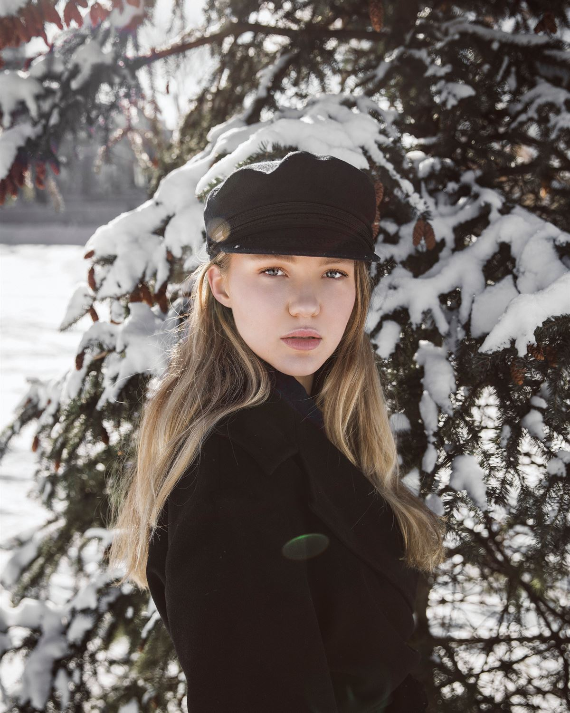

Услуга
Блонд
Блонд — это не один цвет, а план: база, осветление, нюанс и уход. Подбираем оттенок под кожу и состояние волос, без резкого перехода.

О процедуре
Что такое блонд
Блонд — это результат осветления, но начинается он не с порошка, а с плана. Нужно понять, насколько волосы готовы к осветлению, какая у них история и какой оттенок подойдёт коже.
Иногда достаточно одного визита, иногда нужна подготовка или второй этап. Честно скажу на консультации, какой результат реально получить без риска для волос.
Как проходит
Четыре этапа
Блонд требует внимания к состоянию волос — поэтому диагностика и план здесь особенно важны.
-
01
Диагностика и тест
Оцениваю состояние волос и делаю тест на совместимость. Обсуждаем желаемый оттенок.
-
02
План осветления
Составляю план: сколько осветления нужно, какие участки проработать и что делать с длиной.
-
03
Осветление
Работаю аккуратно и контролирую процесс. При необходимости разбиваю задачу на два визита.
-
04
Тонирование и уход
Закрываю оттенок, делаю восстанавливающий уход и укладку. Даю рекомендации по поддержке.
Цены
Стоимость блонда
Точная цена — после диагностики. Для тёмной базы может понадобиться два визита.
| Длина | Что входит | Время | Стоимость |
|---|---|---|---|
| До плеч | Осветление, тонирование, уход | 3–4 часа | 7 000 ₽ |
| Ниже плеч | Осветление, тонирование, уход | 4–5 часов | 8 500 ₽ |
| Длинные | Осветление, тонирование, уход | 5–6 часов | 10 000 ₽ |
Для тёмной базы может понадобиться 2 визита. Точная стоимость — после диагностики; густые и нарощенные волосы +30%.
Работы
Примеры блонда
Холодный и тёплый блонд, естественные переходы и мягкий контраст.
FAQ
Частые вопросы
Если остались сомнения — напишите, разберёмся вместе.
Можно ли стать блондинкой за один визит?
Не всегда. Всё зависит от исходной базы и истории окрашиваний. Иногда достаточно одного визита, иногда нужна подготовка или второй этап — скажу точно после диагностики.
Не испортятся ли волосы?
Полностью исключить нагрузку на волосы при осветлении нельзя. Но можно работать аккуратно, контролировать процесс и обязательно завершать процедуру уходом. Если волосы не готовы — предложу другой план.
Как поддерживать блонд?
Тонирование раз в 4–6 недель, шампунь для холодного или тёплого блонда, маска 1–2 раза в неделю и защита от высокой температуры. Так оттенок дольше остаётся свежим.
Что делать с тёмной базой?
Начать с консультации и диагностики. Иногда осветление разбивают на два визита, чтобы не травмировать волосы и получить ровный оттенок.
Обсудим ваш блонд?
Напишите в Telegram — уточню детали, предложу время и скажу, что подготовить к визиту.